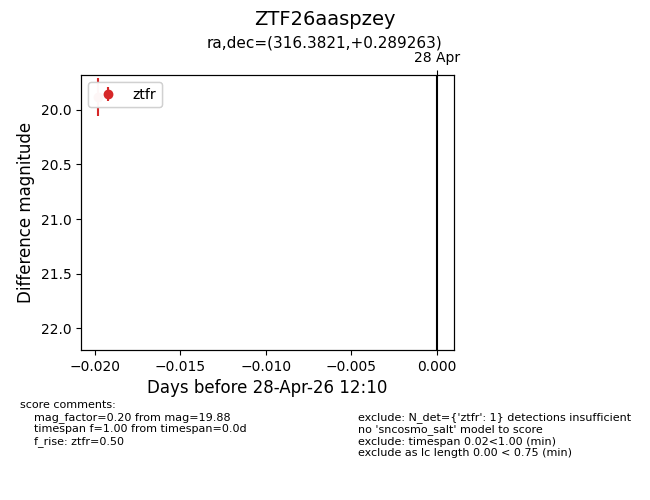
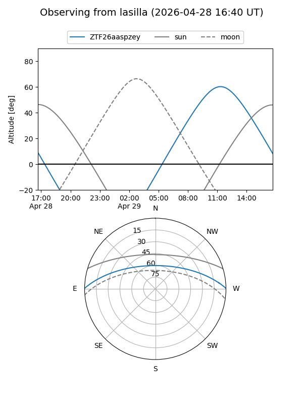
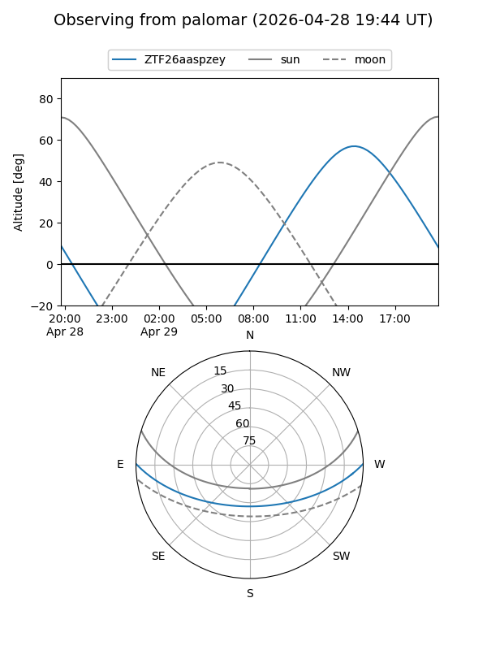
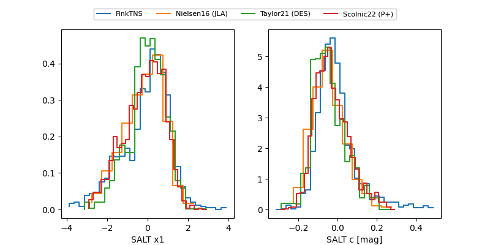

ZTF26aaspzey
Target ZTF26aaspzey at 2026-04-28 12:11
Aliases and brokers:
FINK: link
Lasair: link
ALeRCE: link
alt names
ZTF26aaspzey (ztf,fink_ztf)
Coordinates:
equatorial (ra, dec) = 316.3821,+0.28926
equatorial (HMS+DMS) = 21:05:31.70,+00:17:21.35
galactic (l, b) = (50.0224,-29.28812)
Flags:
Photometry:
last ztfr=19.88
1 ztfr detections
Lightcurve

Visibility


Additional plots
